Table of Contents
This is KITE!
Kite Platform improves productivity globally in the M2M sphere, providing tools to manage your devices connectivity. Among these tools are:
- SIM card management, display and management of its parameters through the inventory, activation and other administrative changes.
- Line assignment or migration to different commercial plans
- Pre-bill invoices inquiries
- Users and organizations management
- Alarms and reports management Among the tools provided by Kite Platform, are a few APIs used for the integration of the product functionalities in the Customer’s systems. Those APIs description is available in the Help menu in the web portal.
Quick view to Kite Grafic Interface
The grafic interface of Kite is organized as shown in the following figure.

- 1 Configuration menu
- 2 Main menu
- 3 Work area

Manage your SIMs
SIM inventory
you can use the search engine of the platform to locate a SIM by copying its ICC number in the bar
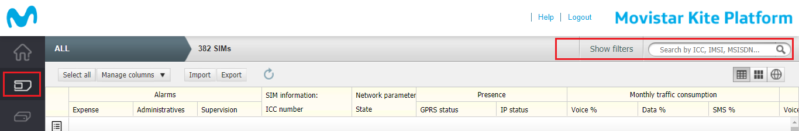
or you can access the SIM inventory, where you can locate and manage all your cards

To see the details of each of the SIM, double click on each of them to view SIM details, or simply select one or several to activate the bottom menu
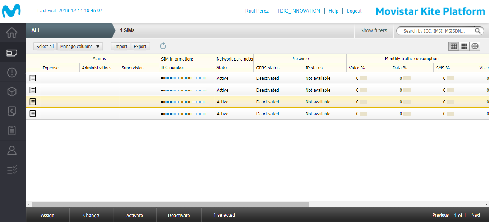
In the image above you can check the current status of your SIMs within their life cycle.
Some of them may be deactivated, and you may need to change their status. In the next step we will show you how to check that a SIM is operational.
SIM inventory bottom menu
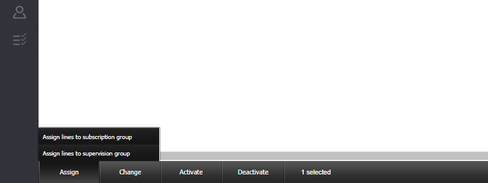

 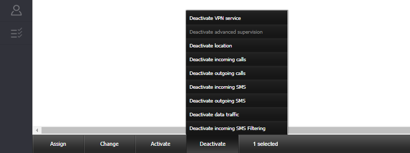
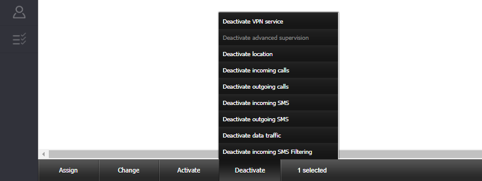
Assign lines to subscription group
First of all, your SIM must be assigned to a subscription group. If this is not the case you should contact your local SIM distributor.

Change life cycle state
In order for a SIM to be operational, it must be activated.


-
Inactive new, initial state of any SIM card. The card will remain in this state until you assign a Subscription Group to it (including a commercial plan).
-
Test, optional and available test for once the SIM card is assigned to a Subscriptions group that takes into account that state in its commercial plan. This state enables a limited traffic in order to prove the SIM card is functioning correctly.
-
Activation ready, previous state to Activated and state the SIM card changes to once the time or the available traffic is consumed in the Test state.
-
Pending activation, state similar to the previous one, but in this one the change to the Activated state is done manually from Inventory.
-
Activated, in this state the SIM card is fully operating, in condition of regular traffic, and fees and service restrictions set up in the Subscriptions group through the assigned commercial plan apply to it.
-
Deactivated, state a SIM card can change to, typically when there is an anomaly with the card. In this state, the SIM card does not have traffic but its permanence can entail an associated fee. From this state, the card can be activated again manually.
-
Suspended, state a SIM card can be changed to, typically in cases of fraud or unpaid, from any state it is in as long as it is not Retired. Leaving this state implies returning to the state the SIM card was in before or to be Retired. Only the Service Provider is authorized to perform manual transitions to and from this state.
-
Retired, this shall always be the last state a SIM card shall be in before it is retired. This state can only be reached if the card is suspended. Once in this state, there is no going back to the previously defined states.
Activate data traffic
And lastly you must make sure that the SIM has the traffic activated.


SIM details

SIM identification
When the section opens, the detailed information on the SIM card is accessed. Some of these fields are editable with the Edit button on the top right corner.
Here you can add both an identifying name to your SIM Alias and add and manage the content of your custom fields.

Life cycle state
It groups information related to the status changes in the life cycle of the SIM card. It displays only the value of the current state.
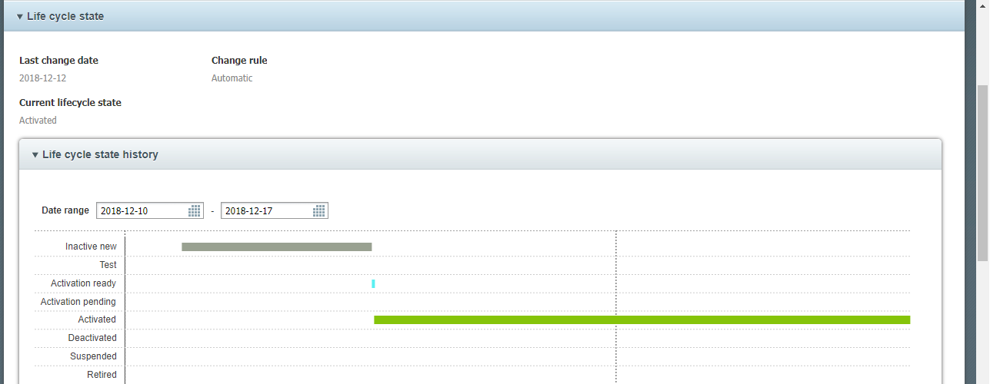
Presence
It displays SIM information related to the connectivity. If you do not know the APN through which your SIM has to be connected, you can check it in this section.

Traffic consumption control
Shows detailed or summary information on the SMS messages, data and traffic or voice consumption of the SIM card during the current billing period.
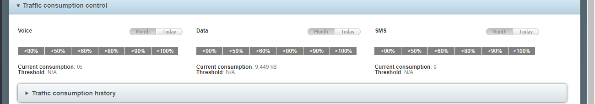
Monthly expense control
Shows detailed or summary information on data, SMS messages and voice expense incurred by the SIM card during the last months.
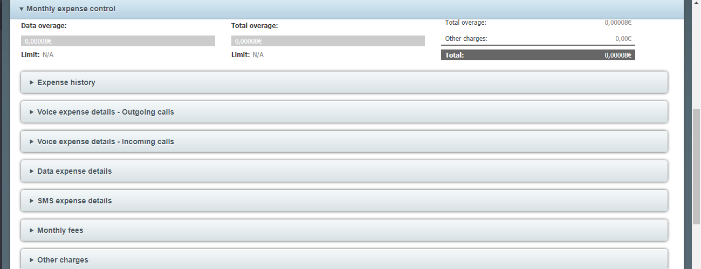
Basic services and Supplementary services
Includes data, SMS and voice traffic services for SIM M2M cards and. indicates whether they are activated
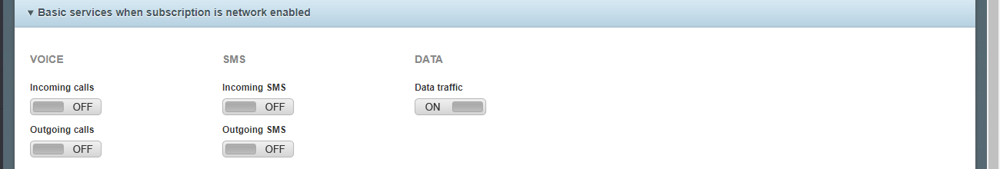 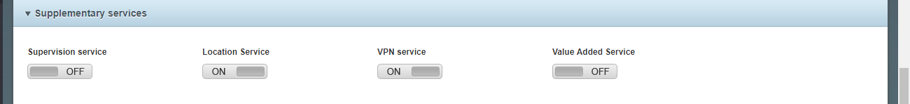
Location
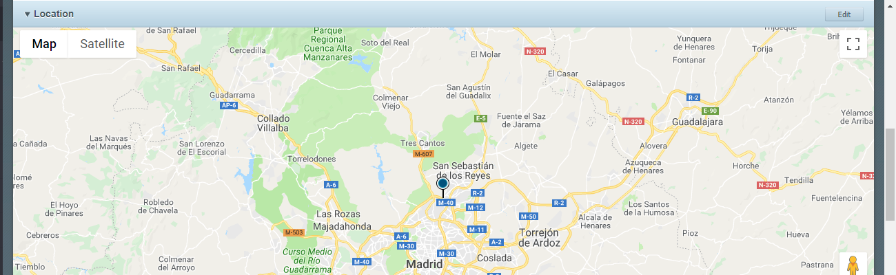

Commercial Management

What is Kite Platform API?
The Kite Platform offers you an API that allows you to integrate it with all your systems. It allows you to access all your data your data offering you various functionalities
How to access Kite Platform API?
The API is available on the Internet, in the address m2m-api.telefonica.com, through port 8010. Therefore, the services this API exhibits can be used from any system having access to the Internet.
:heavy_exclamation_mark: All your API requests must use the HTTPS protocol. This guarantees the confidentiality of your data.
To ensure your confidentiality, you will use the SSL (Secure Sockets Layer) protocol. This protocol allows you to establish a bidirectional communication between your systems and Kite.
This request is made through the use of a certificate and a private key for encryption, these will be issued on demand and will be exclusive to you. Take good care of it! Remember that it is the gateway to all your SIM data.
Extract your credentials files
If you have requested access to the Kite Platform API, the support team will have provided you with an encrypted file.pfx containing both the key and the certificate for the SSL context of your connection. It will also provide you a password so that you can extract them.
It is important not to modify the name of the .pfx file until you extract the files.
- Open a Linux Terminal and install openssl, if you do not have it installed.
This command allows you to decrypt your file
sudo apt-get install openssl - Extract the public key from Customer certificate your_customer_certificate.pfx
openssl pkcs12 -in your_customer_certificate.pfx -clcerts -nokeys -out your_customer_certificate.cer -password pass:xxxxxxxYou will need the password provided by the Kite Platform Support Team
- Extract the private key from the Customer certificate
openssl pkcs12 -in your_customer_certificate.pfx -nocerts -nodes -out your_customer_certificate.key -password pass:xxxxxxxxalso you will need your password here.
:heavy_exclamation_mark: Remember, keep these new files in a safe place!!
Access API using a command
The Curl command is used to transfer files from a server, it supports various protocols such as HTTP, FTP …
There is an example about the access to the Commercial Plans API REST using the CURL command:
sudo curl --cert ./your_customer_certificate.cer --key ./your_customer_certificate.key https://m2m-api.telefonica.com:8010/services/REST/GlobalM2M/ServicePacks/v2/r12/servicePack

How it’s made!
+ [How Activate Location Service](#how-activate-location-service)
How Activate Location Service
First Go to SIM Inventory / Select your SIM / and Press Activate on the bottom-menu

find the opction Activate Location and click it.

A new window is open! Click in Activation

Now the service is activate click on Finish
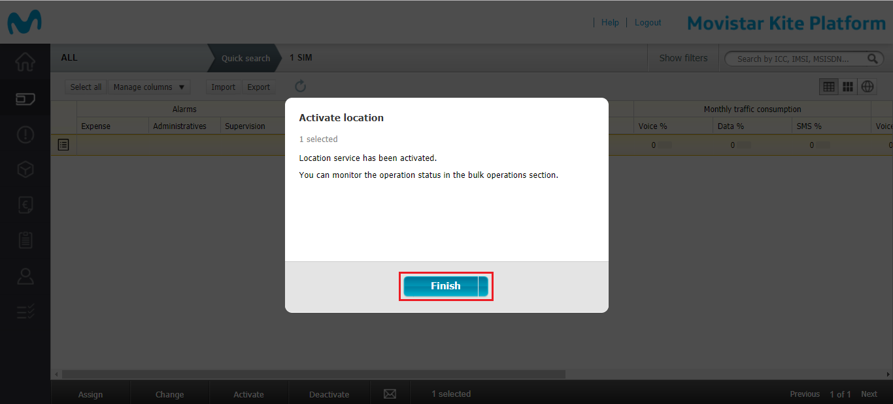